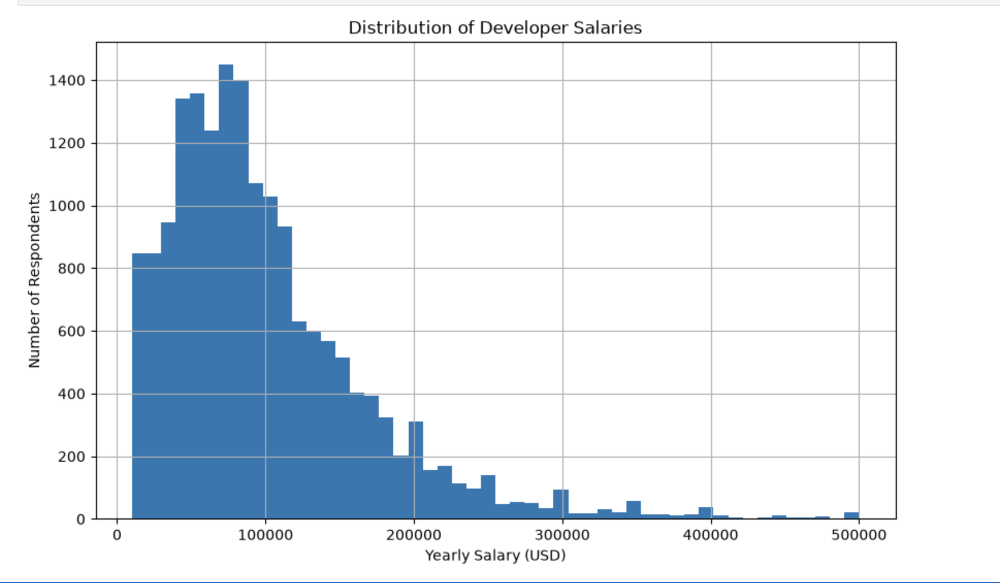
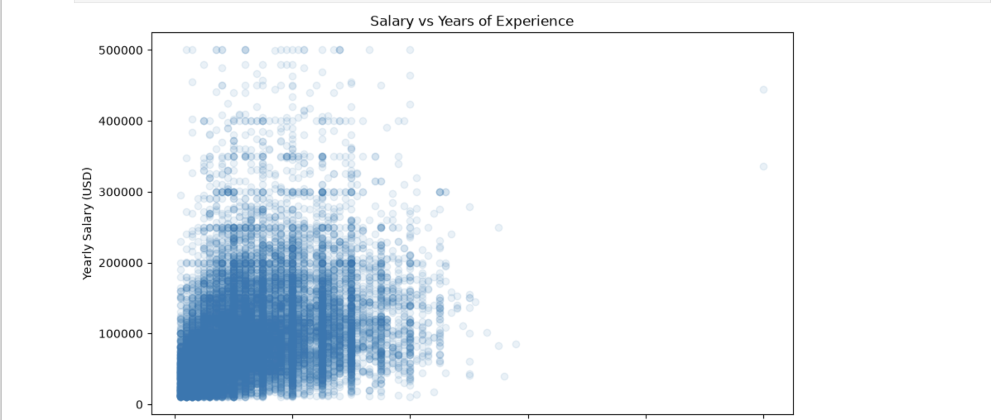
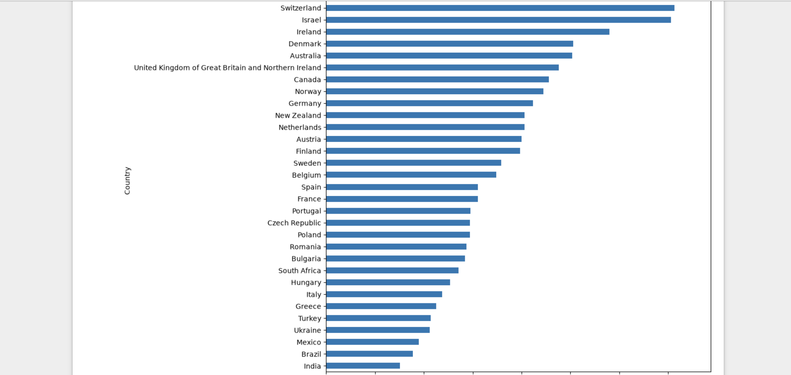

salary_eda.ipynb
Do developers get paid what they're worth?
An exploratory analysis of 49,191 responses from the 2025 Stack Overflow
Developer Survey — cleaning messy real-world data to find out what actually
predicts a developer's salary.
5×
salary gap between highest & lowest paying countries
0.32
correlation between experience & salary — weaker than expected
17,679
clean salary records after removing outliers
step 01
Loading the data
The dataset is large and mixed-type — 172 questions asked to 49,191 developers,
from salary and role to tools and AI usage. First step: load it and get a feel
for its shape.
In [1]:
df = pd.read_csv("results.csv", low_memory=False)
df.shape
Out [1]:
49,191 rows × 172 columns. Mostly categorical —
119 text columns, 52 numeric, and a single row-ID column.
This confirmed the real cleaning work would be about handling
missing answers and inconsistent categories, not fixing numbers.
step 02
Narrowing the scope
172 questions is too many to analyze meaningfully in one project.
I pulled out the 12 columns directly relevant to a "jobs & salary" story.
In [2]:
cols = ["MainBranch", "Age", "EdLevel", "Employment", "WorkExp",
"DevType", "Country", "Currency", "ConvertedCompYearly",
"RemoteWork", "OrgSize", "JobSat"]
df_jobs = df[cols]
Out [2]:
A focused working table — same 49,191 people, just the questions
that matter for this analysis. Kept the original df
untouched in case anything else was needed later.
step 03
Why is half the salary data missing?
Over half of respondents didn't report a salary. Before deciding how to
handle that, I checked whether it was random — or explainable.
In [3]:
df_jobs.groupby("Employment")["ConvertedCompYearly"] \
.apply(lambda x: x.isnull().mean())
Out [3]:
| Employment status | % missing salary |
|---|
| Employed | 42.2% |
| Independent contractor / freelancer | 54.5% |
| Not employed | 77.4% |
| Retired | 81.2% |
| Student | 84.1% |
Missing salary correlates with employment status, as expected —
but even among employed respondents, 42% still skipped it.
Income is a sensitive question people decline regardless of eligibility.
So instead of dropping rows dataset-wide, I only filter to reported
salaries when salary itself is the focus.
step 04
Removing outliers
Raw reported salaries ranged from $1 to
$33,552,720 a year — obvious junk and typos rather
than real data.
In [4]:
df_salary_clean = df_salary[
(df_salary["ConvertedCompYearly"] >= 10000) &
(df_salary["ConvertedCompYearly"] <= 500000)
]
Out [4]:
| Before | After |
|---|
| Rows | 19,500 | 17,679 |
| Mean | $102,510 | $100,250 |
| Median | $78,890 | $83,792 |
| Max | $33,552,720 | $500,000 |
Only ~9% of rows were removed, but the result is far more trustworthy —
mean and median are now much closer together, meaning the extreme
outliers were no longer distorting the picture.
step 05
What does the salary distribution actually look like?
With clean data in hand, the first real visualization: a histogram of
all 17,679 salaries.
In [5]:
df_salary_clean["ConvertedCompYearly"].hist(bins=50)
Out [5]:

A classic right-skewed distribution — most developers
cluster around $60,000–$90,000, with a long tail of high earners
pulling the average upward. This is why median, not mean, is the
better summary statistic for salary data.
step 06
Does experience predict salary?
The obvious hypothesis first: more years coding, more pay.
In [6]:
df_salary_clean[["WorkExp", "ConvertedCompYearly"]].corr()
Out [6]:

Correlation ≈ 0.32 — a weak-to-moderate relationship.
Experience alone is a poor predictor of pay: plenty of developers with
20+ years of experience still earn under $100k, while others with far
less experience earn much more. Something else is driving the gap.
step 07
Does country predict salary?
A stronger hypothesis: pay is set relative to local cost of living and
market maturity, not global experience.
In [7]:
df_salary_clean.groupby("Country")["ConvertedCompYearly"] \
.median().sort_values(ascending=False)
Out [7]:

Country explains far more of the salary gap than experience does.
Median salary ranges from ~$150,000 (United States) down to ~$30,000
(India) — roughly a 5× spread — with a clear
economic clustering: US/Switzerland/Israel at the top, Western Europe
in the middle, and lower cost-of-living countries at the bottom.
step 08
What I learned
- Real survey data is messy in predictable ways — missing values often
have a story behind them, not just randomness.
- Outliers can badly distort summary statistics (mean vs. median) if you
don't check for them before analyzing.
- Country/geography is a far stronger driver of developer salary in this
dataset than years of experience — a genuinely useful, slightly
counter-intuitive finding.
Next step I'd explore: breaking salary down by role (DevType) and
education level to see which matters more once country is held constant.